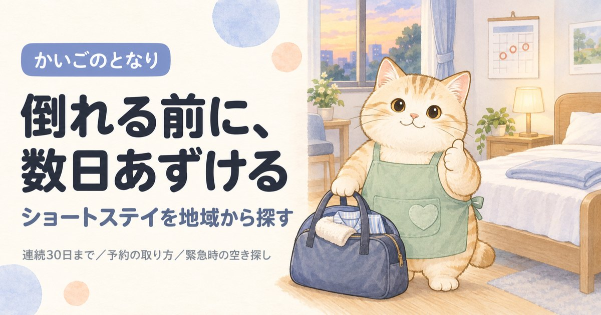

台東区のショートステイ一覧｜予約が取れる事業所の見分け方
事業所一覧へ（9件）
東京都台東区で短期入所生活介護（ショートステイ）を探している方へ。東京都の指定を受けた9件から9件を連絡先つきで掲載し、そのうち特養の空床を使う空床利用型が2件あることまで示しました。ショートステイでいちばん多い壁は予約が取れないことです。同じ区の事業所でも、専用の床を持つところと特養の空きベッドを使うところでは、押さえやすさがまったく違います。
目次
数字で見る台東区のショートステイ
- 区内の事業所
- 9件23区中18位（多い順）
- 65歳以上1万人あたり
- 2.0件23区中10位（多い順）
- 高齢化率
- 20.3%23区中13位（高い順）
- 要介護・要支援の認定
- 10,832人65歳以上の24.3%
事業所数は東京都福祉局の指定事業所一覧（2026年9月1日時点）、人口は住民基本台帳（2026年1月1日時点）から計算。区の統計をくわしく見る
台東区でショートステイを探すとき、最初に押さえること
台東区には東京都の指定を受けた短期入所生活介護の事業所が9件あります。数が限られるため、隣接する区の事業所も早めに視野に入れてください。ショートステイでいちばん多い壁は、費用でも場所でもなく予約が取れないことです。特にお盆・年末年始・連休は数か月前から埋まります。
①ケアマネジャー、いなければ地域包括支援センターに相談 → ②台東区内の空床利用型ではない7件を先に当たる → ③空いている日を押さえてから予定を決める → ④初回は1泊2日で試す。
いきなり1週間あずけると、本人が混乱して次から拒否することがあります。
ショートステイの種類（生活介護と療養介護の違い）、連続利用の上限、緊急時の預け先、認知症のある方の受け入れはショートステイを地域から探すにまとめています。台東区に限らず共通の内容です。
台東区のショートステイ一覧
台東区内の短期入所生活介護事業所から9件を掲載しています（東京都公表・2026年9月1日時点）。区内には9件が指定を受けており、そのすべてを掲載しています。「特養の空床利用」「単独型」などの表示は東京都の一覧の事業所種別名です。空き状況は日々変わるため、この一覧では扱っていません。掲載順は事業所の優劣を示すものではありません。
9 / 9件を表示
地図：国土地理院（地理院タイル）を加工して作成。位置は厚生労働省の公表データの座標で、建物の入口とずれることがあります。
1特別養護老人ホーム浅草ほうらい
清川2-14-7社会福祉法人清峰会
事業所番号 1370602649
3ショートステイ 橋場すみれ園
橋場1-1-10社会福祉法人すみれ福祉会
事業所番号 1370603829
5東京都台東区立特別養護老人ホーム谷中
谷中2-17-20社会福祉法人台東区社会福祉事業団
事業所番号 1370603985
6東京都台東区立特別養護老人ホーム浅草
浅草4-26-2社会福祉法人フレスコ会
事業所番号 1370604611
7東京都台東区立特別養護老人ホーム台東
台東1-25-5社会福祉法人健修会
事業所番号 1370604629
8東京都台東区立特別養護老人ホーム竜泉
竜泉2-10-8社会福祉法人台東区社会福祉事業団
事業所番号 1370604678
9東京都台東区立特別養護老人ホーム竜泉
竜泉2-10-8社会福祉法人台東区社会福祉事業団
事業所番号 1370604686
条件に合う事業所はありません。条件を1つ外してみてください。
上記9件は、2026-09-22に台東区および各事業者の公表情報で確認した内容です。営業時間・対応エリア・空き状況は変動しますので、連絡の前に必ず公式情報をご確認ください。掲載内容の訂正・削除は、お問い合わせからご依頼いただければ理由の説明なしで削除します。
掲載9事業所の内訳
台東区内で掲載している9事業所を、事業所の型・所在地・運営法人・開設からの年数の4つの軸で集計しました。事業所ごとの詳細は上の一覧をご覧ください。
事業所の型（予約の取りやすさに直結します）
掲載9件のうち特養の併設事業所型が7件と最も多く、特養の空床を使う空床利用型は2件です。ここが台東区で事業所を選ぶときのいちばん大きな違いです。空床利用型は掲載分の22%にあたり、23区平均の11%より高めです。台東区では専用の床を持つ事業所から先に当たってください。
| 事業所の型 | 件数 | 予約するときに効いてくること |
|---|---|---|
| 特養の併設事業所型 | 7件 | 特別養護老人ホームに併設され、ショートステイ専用の床を持つ。定期的に使う予定が立てやすい |
| 特養の空床利用型 | 2件 | 特養の入所者用ベッドの空きを使う。本体が満床だとその分使えず、直前の予約は取りにくい |
所在町域
送迎のない事業所では家族が送り迎えするため、往復の距離がそのまま負担になります。台東区内は33の町域に分かれていて、掲載分がいちばん多いのは竜泉（2件）です。
町域ごとの事業所名を見る（7町域）
| 町域 | 掲載事業所 |
|---|---|
| 浅草 | フレスコ浅草、東京都台東区立特別養護老人ホーム浅草 |
| 竜泉 | 東京都台東区立特別養護老人ホーム竜泉、東京都台東区立特別養護老人ホーム竜泉 |
| 三ノ輪 | 東京都台東区立特別養護老人ホーム三ノ輪 |
| 台東 | 東京都台東区立特別養護老人ホーム台東 |
| 橋場 | ショートステイ 橋場すみれ園 |
| 清川 | 特別養護老人ホーム浅草ほうらい |
| 谷中 | 東京都台東区立特別養護老人ホーム谷中 |
運営法人の種別
掲載9件のうち社会福祉法人（社協以外）が9件と最も多くなっています。区分は東京都の公表値をそのまま使っています。台東区でもショートステイは特養に併設されていることが多いため、社会福祉法人に寄ります。
| 法人の種別 | 件数 | 傾向 |
|---|---|---|
| 社会福祉法人（社協以外） | 9件 | 特別養護老人ホームなどに併設されていることが多く、設備が整っている |
公表されている定員
掲載9件のうち定員が公表されているのは3件で、いちばん小さい事業所が11床、いちばん大きい事業所が23床です。床数が少ないほど連休は早く埋まります。台東区で定期的に使うなら、床数の多い事業所も候補に入れてください。
| 定員 | 件数 | 予約するときの目安 |
|---|---|---|
| 11〜20床 | 2件 | 都内で標準的な規模 |
| 21床以上 | 1件 | 直前でも空きが出ることがある |
定員は厚生労働省の公表データの値で、特養に併設されている事業所ではショートステイ用の床だけを指すとは限りません。実際に何床押さえられるかは事業所にご確認ください。
開設からの年数
掲載9件のうち、指定から20年以上たっている事業所は0件、最も古い事業所は約16年前の指定です。古い事業所ほど常連の利用者が予約枠を押さえていることがあり、台東区でも新しいところのほうが空きを見つけやすい場合があります。
| 指定を受けた時期 | 件数 | 見るときの目安 |
|---|---|---|
| 直近3年以内 | 4件 | 設備が新しく、空きがあることが多い |
| 3〜10年 | 3件 | 運営が固まってきた時期。空き状況は事業所ごとに差が大きい |
| 10〜20年 | 2件 | 利用者が定着している。空きは出にくい |
指定年月日は東京都が公表している指定事業所一覧の値です。事業所の移転や法人変更で指定を取り直している場合があるため、実際の営業年数とは一致しないことがあります。
台東区で埋まっていたときに当たる、隣の区
ショートステイは台東区以外の事業所にも申し込めます。デイサービスと違って毎日通うわけではないので、少し遠くても成り立ちます。台東区に隣接する5区を合わせると41件あり、台東区内の9件と比べて選べる幅がかなり広がります。
台東区で介護保険を使う場合の自己負担
台東区を含む東京23区は介護報酬の地域区分で最も高い1級地にあたり、1単位＝11.40円です。短期入所生活介護の基本報酬は、その事業所が単独型か併設型かで分かれます。台東区の掲載9件では9件が特養などに併設されており、併設型の単位数で算定されることが多くなります。
| 要介護度 | 併設型 | 1割負担 | 単独型 | 1割負担 |
|---|---|---|---|---|
| 要介護1 | 603単位 | 約687円 | 645単位 | 約735円 |
| 要介護2 | 672単位 | 約766円 | 715単位 | 約815円 |
| 要介護3 | 745単位 | 約849円 | 787単位 | 約897円 |
| 要介護4 | 815単位 | 約929円 | 856単位 | 約975円 |
| 要介護5 | 884単位 | 約1,007円 | 926単位 | 約1,055円 |
従来型個室と多床室は同じ単位数です。ユニット型個室はこれより高く、台東区の1級地だと要介護3の1割負担で1日約965円（併設型）になります。上の金額は基本報酬だけで、加算が別に上乗せされます。台東区の事業所がどの区分で算定するかは申し込み時にご確認ください。
予約のときに台東区の事業所へ聞くこと
- 専用の床か、特養の空床利用か台東区の掲載9件のうち2件が空床利用型です。空床利用型は直前の予約が取りにくいので、定期的に使うつもりなら最初に確認してください。
- 何か月先まで予約を受け付けているか事業所によって「3か月前から」「2か月前の1日から」など受付開始日が違います。ここを外すと埋まります。
- 部屋は多床室か個室か、滞在費はいくらか基本報酬は同額でも滞在費が違います。負担限度額認定を持っているかも伝えてください。
- 服薬・医療的ケアへの対応と、キャンセル料インスリン、たんの吸引、経管栄養は断られることがあるので申し込みの段階で正確に伝えます。キャンセル料が何日前から発生するかも、台東区内の事業所ごとに違います。
よくある質問
台東区でショートステイを使うには、まず何をすればいいですか？
担当のケアマネジャー、いなければ地域包括支援センターに相談してください。ショートステイもケアプランに位置づける必要があるため、台東区の事業所に直接申し込むのではなくそこが入口になります。要介護認定を受けていない場合は、認定の申請から始まります。
台東区にショートステイは何件ありますか？
東京都が公表している指定事業所一覧では、2026年9月1日時点で台東区内に9件の短期入所生活介護事業所が指定を受けています。本ページではそのうち9件を連絡先つきで掲載しています。掲載分のうち2件が特養の空床利用型です。
台東区で予約が取れないときはどうすればいいですか？
まず空床利用型以外を当たってください。台東区の掲載9件のうち7件は専用の床を持つ事業所です。それでも埋まっていれば、日程をずらすか、台東区に隣接する区の事業所を当たります。台東区でもお盆・年末年始・連休は数か月前から埋まります。
台東区で自己負担はいくらくらいですか？
台東区は介護報酬の地域区分で1級地（1単位＝11.40円）にあたります。従来型個室・多床室の併設型なら1割負担で要介護3が1日約849円、要介護5が1日約1,007円が目安です。ただし台東区でもこれとは別に食費と滞在費が全額自己負担で加わるため、総額はこの倍以上になることがあります。住民税非課税世帯などは負担限度額認定で上限をつけられます。
台東区のショートステイは何日まで連続で使えますか？
台東区でも全国共通で、連続利用は30日までです。日数の管理はケアマネジャーがしてくれます。上限の詳しい決まりはショートステイのしくみのページにまとめています。
認知症があっても台東区のショートステイを使えますか？
使えます。台東区の掲載9件のうち9件は特別養護老人ホームなどに併設されており、認知症の方の受け入れに慣れているところが多くなります。ただし環境が変わると混乱が強く出る方もいるため、台東区でもまず1泊2日から試してください。夜間の見守り体制は事業所ごとに違います。
台東区の高齢化率は20.3%、要介護認定を受けている人は10,832人
台東区の人口217,512人のうち、65歳以上は44,256人（20.3%）です。23区の平均20.2%より高い水準にあたります。65歳以上のうち26,126人は75歳以上で、介護が必要になる人が増えはじめる年代です。
| 項目 | 台東区 |
|---|---|
| 総人口 | 217,512人 |
| 65歳以上（高齢化率） | 44,256人（20.3%） |
| うち75歳以上 | 26,126人（12.0%） |
| 第1号被保険者（65歳以上） | 44,605人 |
| 要支援1・2の認定 | 3,072人 |
| 要介護1〜5の認定 | 7,760人 |
| 認定率（認定者÷第1号被保険者） | 24.3%（23区平均21.9%） |
台東区で要介護・要支援の認定を受けているのは10,832人、区内のショートステイは9件なので、1事業所あたり1204人という計算になります。認定者が全員このサービスを使うわけではないため、混み具合そのものではありません。
認定者数は第1号被保険者（65歳以上）の再掲値で、40〜64歳の方は含みません。出典はページ下部に記載しています。
台東区の町域一覧（対応エリアの目安）
台東区の町域は33。五十音では9行にわたり、最も多いのはあ行の8件です。掲載事業者の対応範囲は町域単位で分かれているため、問い合わせのときは「台東区谷中」のように町名まで伝えてください。
- 秋葉原
- 浅草
- 浅草橋
- 池之端
- 今戸
- 入谷
- 上野
- 上野桜木
- 雷門
- 北上野
- 清川
- 蔵前
- 小島
- 寿
- 駒形
- 下谷
- 千束
- 台東
- 鳥越
- 西浅草
- 日本堤
- 根岸
- 橋場
- 花川戸
- 東浅草
- 東上野
- 松が谷
- 三筋
- 三ノ輪
- 元浅草
- 谷中
- 柳橋
- 竜泉
※町域ごとの事業者ページは、掲載できる事業者が3件以上そろった町域から順次公開します。
台東区の他のサービスを探す
東京23区からショートステイを探す
- 東京都福祉局「居宅サービス事業所一覧」（CC BY 4.0）
- 厚生労働省「介護サービス情報公表システム」オープンデータ（2026年6月30日時点／定員・公式サイト）
- 厚生労働省「指定居宅サービス介護給付費単位数等」短期入所生活介護費（令和6年度改定後・令和8年6月改定を経て有効）／介護報酬の地域区分（1級地・1単位11.40円）
- 台東区「地域包括支援センター一覧」
- 日本郵便 郵便番号データにもとづく台東区の町域一覧
- 東京都総務局統計部「住民基本台帳による東京都の世帯と人口」（令和8年1月1日現在／年齢3区分別人口・5歳階級別人口）
- 東京都福祉局「介護保険事業状況報告（月報）」令和8年6月分（保険者別・第1号被保険者数／要介護認定者数）
最終確認日：2026-09-22／制度・料金は改定される場合があります。ご利用前に各窓口・各事業者で最新情報をご確認ください。